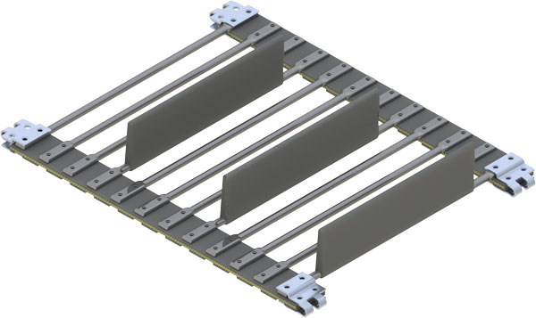
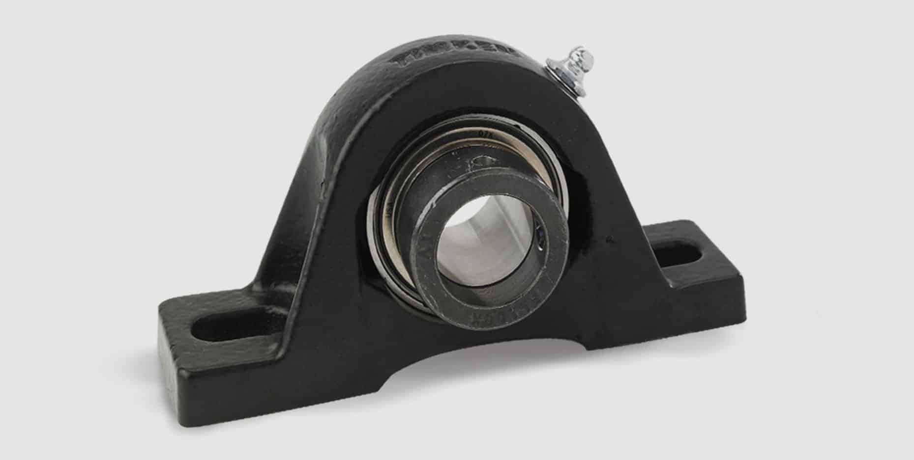
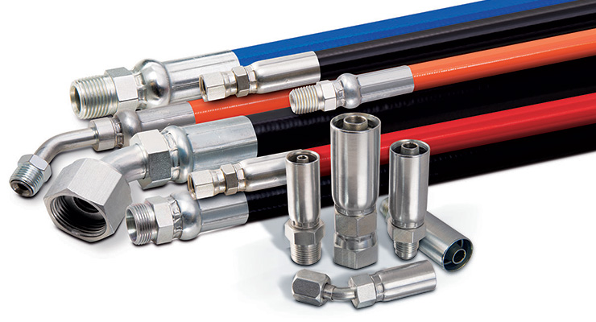

About Us
The basic functionality of this site is to help farmers and customs harvesting guys the ability to order parts from the comfort of their home. It will help their mechanics search through our site and be able to pick out exactly what they need. We have set up a basic order form sheet that they can submit to us so we hand pick the parts and get them ready for delivery or be placed on will call for customer pick up. We strive in ensuring that our customers get the best possible experience to make sure getting the parts is a smooth experience.
Belted chains
Choose from a variety of chains for your tomato harvester
Bearings
We have many sizes of bearings. We can order specific ones for you as well
Hydraulic Hoses
High pressure or suction hose, we will have the correct hose size and crimp fittings for your needs
